GAN的相关知识主要是跟着李宏毅老师入门的，具体内容可以访问哔哩哔哩-李宏毅深度学习2017进行学习。这篇文章主要对学习内容进行总结。
1.传统生成模型
AutoEncoder
AutoEncoder是前馈神经网络的一种，曾经重要用于数据的降维或者特征的抽取，而现在也被广泛用于生成模型。与其他前馈神经网络不同的是，其他前馈神经网络关注的是Output Layer和错误率，而AutoEncoder关注点是Hidden Layer；并且普通前馈神经网络一般比较深，而AutoEncoder通常只有一层Hidden Layer。Hidden Layer中神经元组成的向量（Code）用来表示Input

如图该模型的作用是生成与原图像相似的图像。将原始图像输入神经网络，经过Encoder的压缩，表示成Code；再经过Decoder的解压生成图像；最后计算生成图像与输入图像的MSE（Mean Square Error），这样就可以对模型进行训练。
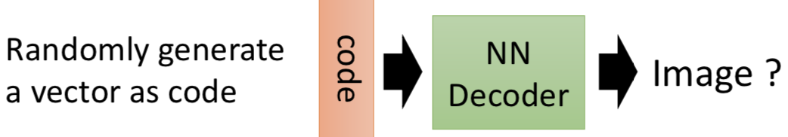
若只取AutoEncoder的Decoder部分，随机生成Code向量输入网络进行解码，这样就可以生成图像。
但是从上图可以看出AutoEncoder的图像生成效果非常的差，从计算loss方式分析其原因。
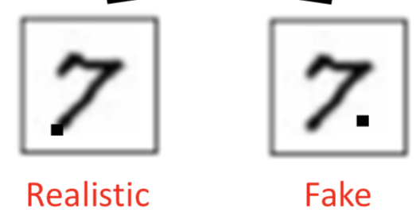
可以从上图中看出，两幅图像仅仅一个像素点的位置不同，但是用MSE计算loss是一样大的，这就说明MSE不能衡量图像像素点的位置信息。
GAN就出场了，设计了Generator和Discriminator结构进行前馈运算，采用KL/JSD等方式，很好的解决了衡量两个图像分布之间‘difference’的问题。
2.GAN前馈流程图
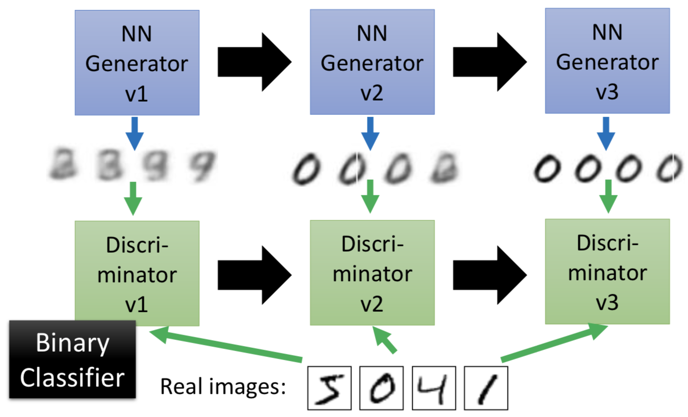
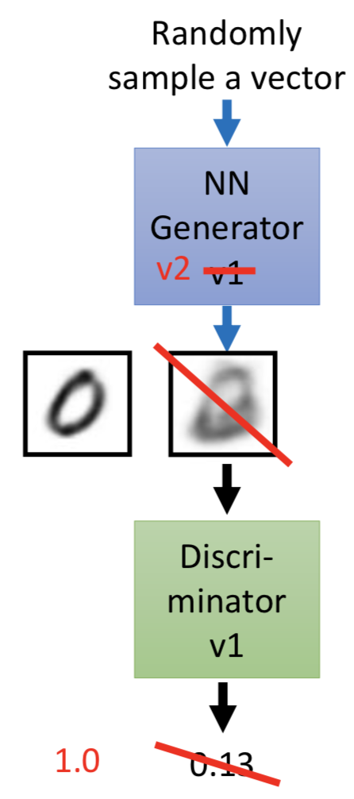
初始化Generator和Discriminator网络参数，服从特定分布的随机变量输入Generator网络生成图像（标签为0），再和真实图像（标签为1）一块输入到Discriminator进行判断。
若是Discriminator对生成图像的判分较低，则Generator参数进行梯度下降更新（此时固定Discriminator）；再将第二轮Generator生成的图像输入到Discriminator进行判断，若是Discriminator对其判分较高，则更新Discriminator参数。
3.GAN原理
给定真实数据分布$ P_{data}(x)$，此处的x代表真实图像构成的向量；设生成模型的分布$P_{G}(x;\theta)$，这个生成分布由$\theta$决定，生成图像模型的目标就是使得生成模型分布$P_{G}(x;\theta)$尽可能的接近真实数据分布$ P_{data}(x)$，也就是要计算$\theta$。
这样就可以采用最大似然估计的方法来，具体方法如下：
- 从真实数据分布$ P_{data}(x)$中采样得到${x^1,x^2,…,x^m}$；
- 计算每个数据的概率$P_G(x^i;\theta)$
- 计算似然：$L = \prod_{i=1}^mP_G(x^i;\theta)$
- 求得$\theta$使得似然最大化
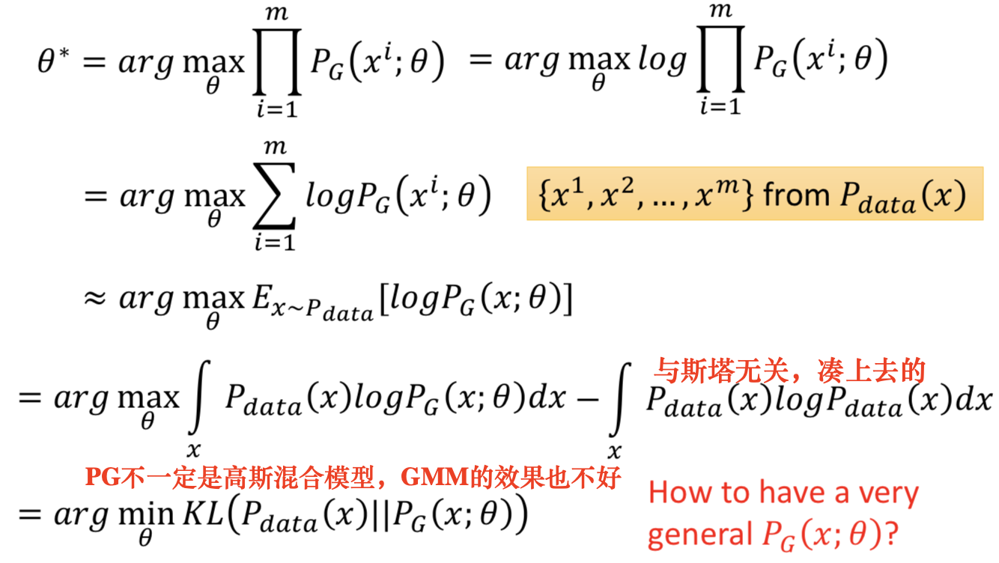
使用最大似然估计求得$\theta$的过程如上图所示，对似然求log变成log似然；真实分布中的所有x的期望等价于概率积分，所以可以转化成积分运算，因为减号之后的积分与$\theta$无关，所以添加上去之后还是等价的；经过这样拼凑之后最大似然估计可以变成求两个分布之间的KL散度，两个分布越相似，KL散度值越小。
在求$\theta$之前必须要假定生成分布的类型，比如是高斯混合模型，但是在实践中这种假设的效果不太好，所以如何能设计出更加一般化的生成模型分布呢？
这里采用神经网络来产生生成分布$P_{G}(x;\theta)$，$\theta$也就是神经网络的权重参数。神经网络只要有非线性激活函数，理论上可以去拟合任意函数，概率分布也可以看作是函数映射，所以可以采用神经网络去学习复杂的概率分布。

Generator G
生成器G是一个函数，输入向量z，输出向量x
$P_{prior}(z)$表示输入向量z的先验分布，$P_G(x)$由生成器G决定
Discriminator D
判别器D是一个函数，输入向量x，输出标量值
D用来衡量$P_G(x)$与$P_{data}(x)$之间的不同
GAN公式
$G^*=arg\min\limits_{G}\max\limits_{D}V(G,D)$
$V=E_{x \sim P_{data}}[logD(x)]+E_{x \sim P_{G}}[log(1-D(x))]$ 衡量$P_G$与$P_{data}$的不同
在G一定的情况，寻找D使得$V(G,D)$最大化，也就是对于真实分布中的x，D(x)要接近1，对于生成分布中的x，D(x)要接近于0，这样使得判别器的能力增强；
再固定D，寻找G使得$\max\limits_{D}V(G,D)$最小，也就是让来自于生成分布中的x的D(x)尽可能的接近1，这样使得生成器的能力增强。
接下来对$G^*=arg\min\limits_{G}\max\limits_{D}V(G,D)$进行求解。
给定G，求得最优的$D^*$使得V最大。
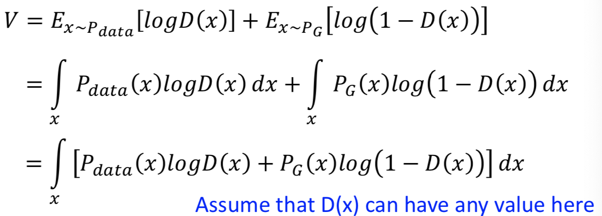
接下来给定x，求$D^*$使得被积函数取极大值。$P_{data}(x)$和$P_{G}(x)$是已知值，只 需要对D求导即可得到极大值。
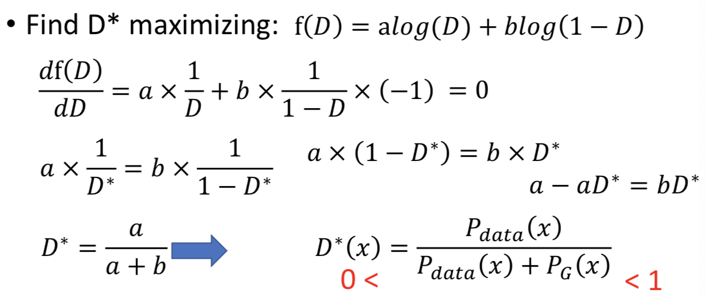
将$D^*$代入V式进行整理。

$log2P_{data}(x)$对x积分之后得$log2$，概率积分为1。

上图的推导主要是凑出JSD分布的形式，JS Divergence是KL散度的对称平滑版本，也是描述了两个分布之间的差异。因为JSD值域[0,log2]所以 $\max \limits_DV(G,D)$的取值范围为[-2log2,0]。
接下来的问题就是如何优化G，使得$P_G(x)$尽可能接近$P_{data}(x)$
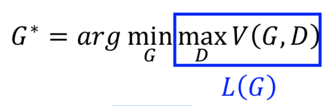
如上图，将$\max \limits_DV(G,D)$视为损失函数$L(G)$，采用梯度下降的方法进行优化
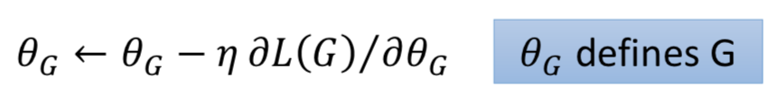
4.GAN训练

如图所示，在实践训练中，我们不可能求得$P_G$和$P_{data}$的期望，所以只能从真实数据分布和生成数据分布中分别采样，代入到损失函数求的交叉熵。
具体的算法流程如下

5.问题优化

在生成模型的优化过程中，生成器的loss Function是$V=E_{x\sim P_{G}}[-log(1-D(x))]$。如上图所示，当D(x)接近0的时候，梯度非常的小。这就导致在训练的初期，生成器G如果想要骗过判别器D变化是非常的缓慢的。所以就将生成器的loss修改成$V=E_{x\sim P_{G}}[-log(D(x))]$这样可以提高训练的速度。
在实际训练中发现，loss一直不发生变化，即$\max \limits_DV(G,D)=0$
因为JSD值域是[0,log2]，这也就是说明$P_G$和$P_{data}$没有相似之处，但是实际上两个分布是有相似之处的，出现问题的原因是我们在积分运算中国使用采样的方法，当训练过拟合的时候，D还是能把两部分的点给分开的，如下图所示。

我们是不是应该让D变得弱一点，减弱它的分类能力，但是我们的初衷是让D变得更强，这就产生了矛盾。
还有一种原因可能是，两个分布都是高维的，但是两个分布都十分的窄，交集相当的小，这就导致JSD比较大。
解决方法：添加噪声，让两个分布变得更宽一些，这样可以增大它们之间的交集，在训练过程中，再使噪声逐渐减小。
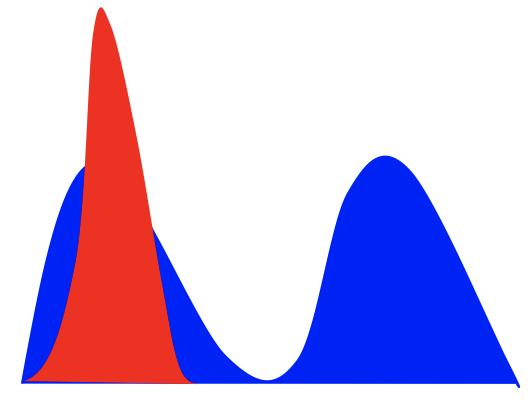
如上图所示，实际训练过程种可能出现这样的情况，真实的数据分布是双峰分布的，而生成的数据分布只拟合了其中一个峰的分布，也就是说没有学到整个分布。
造成这种情况的原因是，KL散度中两个分布写反了。
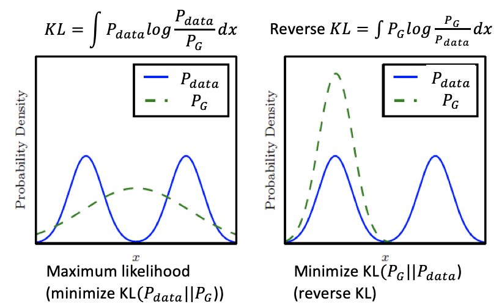
如上图所示，若是第一KL散度的写法，为了防止出现无穷大，所有有$P_{data}$出现的地方都必须有$P_G$覆盖，这样就不回出现Mode Collapse。